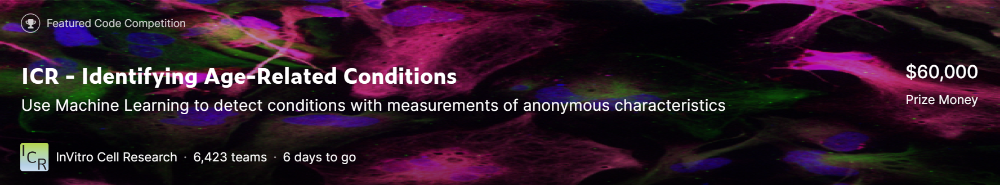

从本学期的机器学习课程的实验里了解了Kaggle，并在ML的实验里CV了不少Kaggle上的内容，到如今自己也可以在Kaggle中收获奖牌，感觉自己在这其中确实有了不少的提升。

废话不多说，先上比赛:
先看第一个比赛: ICR - Identifying Age-Related Conditions
表面上是Age-related conditions，细看会发现是complex conditions without named.